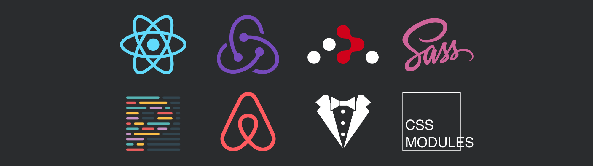

原文标题：Set up create-react-app with: Redux, React Router, Redux Thunk, Prettier, SCSS, Airbnb eslint, Standard stylelint, and CSS modules —— A (very) opinionated guide on setting up Create React App
原文作者：Stephen Koo
翻译：杜梦杰
前言：之前团队内经过讨论和沟通，确定了前端开发规范。规范的执行要由上到下，软硬兼施，除了要求成员们要有自觉性，最好在项目中配置代码规范化/格式化工具。我在配置这些工具时，踩了不少坑，后来有幸看到这篇文章。从头到尾，轻松地将所有工具配置好。本人对于这种规范化的项目比较推崇，拒绝杂乱无章的代码风格，之后的工作中会一直沿用，也推荐大家使用。Keep your code clean!

这是一篇在create-react-app中配置流行包的参考指南。
为了正确的安装这些包，我花了数小时来阅读文档和相关文章，写这篇文章的目的是节省大家的时间。
本指南假定您已经安装了brew、nvm和yarn。（译者注：原作者使用的是yarn，我在注释中写明了对应的npm命令）
0、安装Create React App
|
1、配置SCSS
- create-react-app用户指南中的相关内容
|
package.json中添加：
|
将 src/App.css 重命名为 src/App.scss。
.gitignore中添加：
|
2、配置Prettier
|
新建.prettierrc文件：
|
package.json中添加：
|
使用如下命令格式化整个项目：
|
在编辑器中整合Prettier。(译者注：非常推荐安装编辑器插件，1+1>2)
3、配置eslint和eslint-config-airbnb
查看并安装eslint-config中的所有依赖：
|
可以这样安装（Linux/OSX用户）：
|
或（Windows用户）：
|
新建.eslintrc.js：
|
src/registerServiceWorker.js文件开头处添加：
|
检查现有代码
自动修复一些eslint问题：
|
修改src/index.js：
|
src/App.js 重命名为 src/App.jsx并修改：
|
src/App.test.js 重命名为 src/App.test.jsx并修改：
|
4、配置stylelint和stylelint-config-standard
|
新建.stylelintrc：
|
5、配置eslint和stylelint命令
修改package.json：
|
6、配置Redux、React Router和Redux Thunk
- Jamie Barton’s article中的相关内容
|
7、配置CSS Modules
- 警告：本操作需要暴露（eject）
create-react-app的配置 - nulogy和css-loader中的相关内容
|
修改config/webpack.config.dev.js：
|
修改config/webpack.config.prod.js：
|
修正现有CSS路径
删除css/scss文件类名中的 ‘-’ 。
修改 src/App.jsx ：
|
最终成果
最终成果在下面两个Github仓库中：
其他一些有用的包
你可能会用到下面的一些包：
下面列出了create-react-app已使用的包（eject后可以看到）做参考，不要重复安装：
|